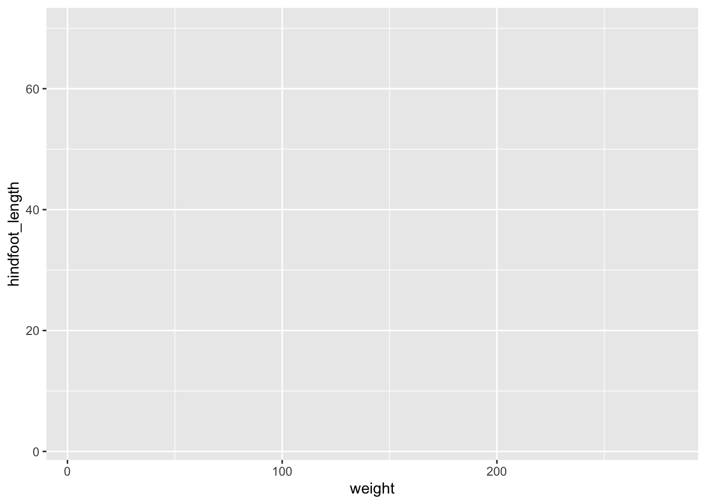
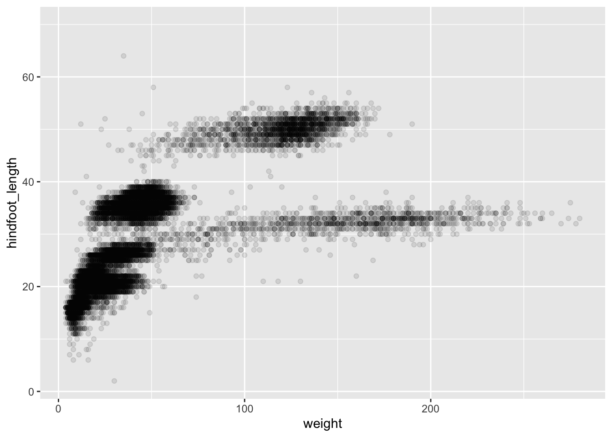
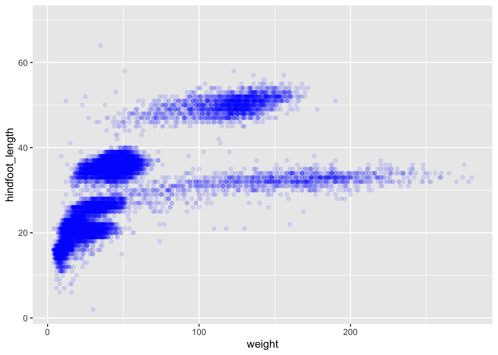
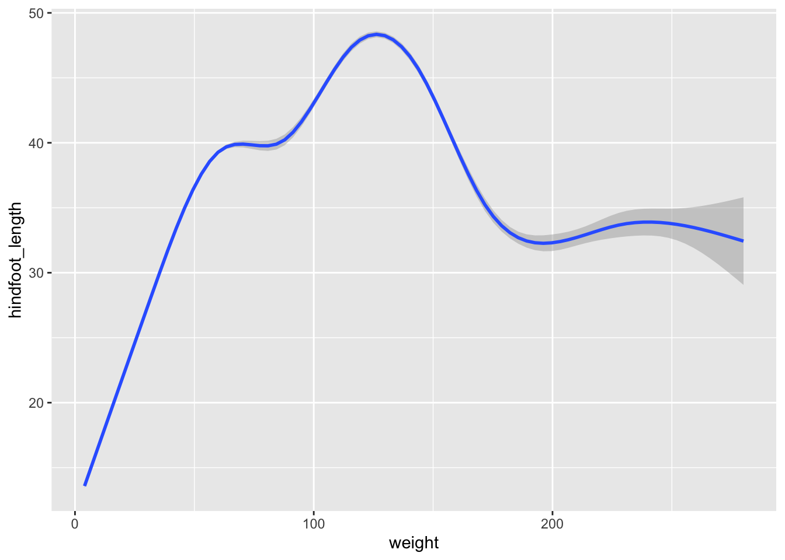
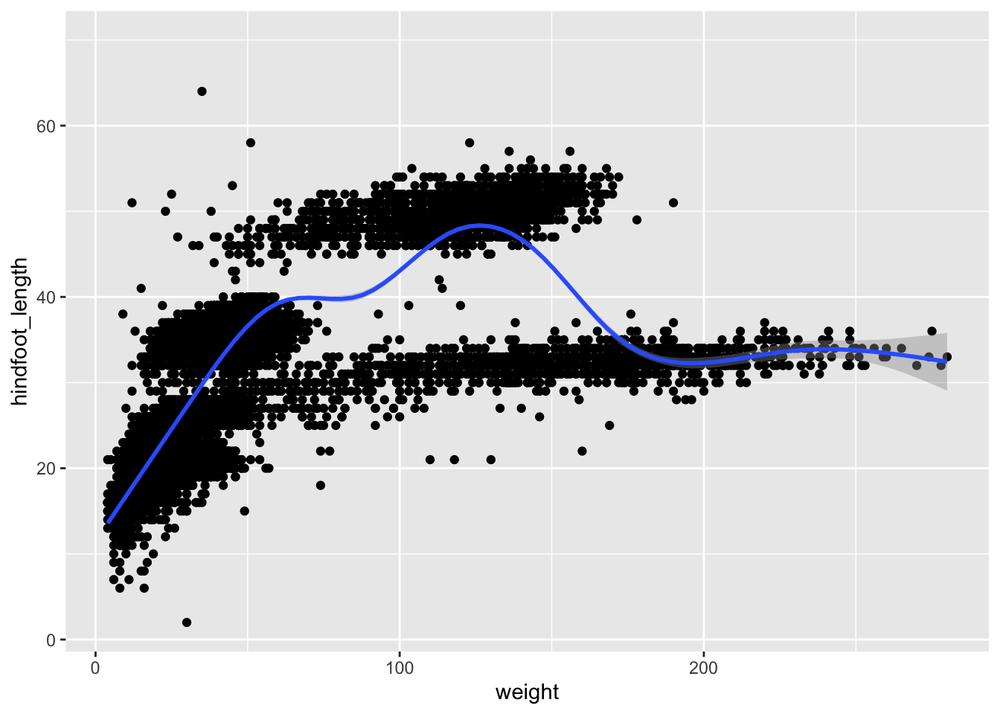

# R Base
surveys[surveys$species=="albigula" &
surveys$year==1977, ]
# tidyverse
filter(surveys, species=="albigula" & year==1977)4 Data manipulation and visualisation with tidyverse
4.1 Data exploration workflow
When you are working on a project that requires data analysis, you will normally need to perform the following steps:

To understand better the workflow1 in the illustration above, let us go over each stage to see what each step entails:
- The first step in working with data is to first import your data into R. This connects the external file/database to your project in R.
- Cleaning or tidying the data will follow, which involves making sure that the data is consistent and that each row in the dataset is an observation and each column is a variable.
e.g. In the surveys data frame the month column specifies months as an integer from 1 to 12. The dataset would have inconsistent data if there was a record in the dataset that had a month specified by name, e.g. September rather than 9. A month of 0 or any other number that is not in the range 1 to 12 would have also made the dataset inconsistent. Another common problem is capitalisation; the same word in the same column can be written with capitals or without; e.g. Bird or bird in the same taxa column is inconsistent data. During the tidying stage it is important to make the dataset consistent as much as possible so that you can focus on the questions you are trying to solve in your analysis.
- Once the dataset is tidy, we move to the transformation stage. To be able to transform your data you need to plan in advance what analyses you would like to perform on the dataset and what plots you would like to create. In this way, you are able to plan ahead what variables/columns you will be using from the dataset, what additional variables you will need to create and what variables you will not be using so that you can keep only the columns in the dataset that are relevant for your analyses. By the end of the transformation process you will have a dataset that is focused for your analyses and you can move on to the main exploratory mechanisms of this workflow which are visualisation and modelling. These two stages complement each other and when exploring your data you normally repeat these two stages several times.
- Visualising data is a powerful way to explore your data. Furthermore it helps you understand if there is any pattern in the data.
- Modelling the data involves applying statistics or other mathematical or computational models on your data to explore if there are correlations or patterns in the dataset to help you answer the scientific question you are trying to solve.
- The last step in the data exploration workflow is to communicate your results. This is very important as you will need to be able to communicate your results to others to have a successful project.
All these stages in the data exploration workflow can be achieved by programming in R. In these R practicals we will not look into the Model and Communicate stages of the workflow in this course.
In the next sections we will be looking at the import, tidy, transform and visualise stages of the data exploration workflow by using one of the most popular packages in data science in R; Tidyverse.
4.2 Packages
So far we have learnt how to use R with R’s in-built functionality that we will refer to as R base. There is a way, however, to extend this functionality by using external functions through packages. Packages in R are basically sets of additional functions that let you do more stuff. The functions we’ve been using so far, like str() or head(), come built into R; packages give you access to more of them.
4.2.1 Tidyverse
The package that we will be using in this course is called tidyverse. It is an “umbrella-package” that contains several packages useful for data manipulation and visualisation which work well together such as readr, tidyr, dplyr, ggplot2, tibble, etc…
Tidyverse is a recent package (launched in 2016) when compared to R base (stable version in 2000), thus you will still come across R resources that do not use tidyverse. However, since its’ release, tidyverse has been increasing in popularity throughout the R programming community and it is now very popular in Data Science as it was designed with the aim to help Data Scientists perform their tasks more efficiently.
Some of the main advantages of tidyverse over R base are:
- Easier to read
Bracket subsetting is handy, but it can be cumbersome and difficult to read, especially for complicated operations.
e.g. Get only the rows that have species as albigula surveyed in the year 1977.
- Faster
Using tidyverse is up to 10x faster1 when compared to the corresponding base R base functions.
- Strings are not converted to
factorWe have seen in our previous lesson that when building or importing a data frame, the columns that contain characters (i.e., text) are coerced (=converted) into the
factordata type. We had to setstringsAsFactorstoFALSEto avoid this hidden argument to convert our data type. With tidyverse, this does not happen.
4.2.2 Installing and loading packages
Before using a package for the first time you will need to install it on your machine, and then you should import it in every subsequent R session when you need it. To install a package in R on your machine you need to use the install.packages function. To install the tidyverse package type the following straight into the console:
#install the tidyverse package
install.packages("tidyverse")It is better to install packages straight from the console then from your script as there’s no need to re-install packages every time you run the script.
Then, to load the package type:
## load the tidyverse package
library(tidyverse)4.3 Importing/Reading data from files
After loading the tidyverse package in R we are now able to use its’ functions. We will start working through the data exploration workflow by first importing data into R. To import the data into R as before, we will now use the read_csv function, from the tidyverse package readr, instead of using read.csv from R base. The readr package contains functions to read tabular data into R. Let us read in the same file we used before using tidyverse this time:
surveys <- read_csv("data/portal_data_joined.csv")4.4 Tibble
After importing data into R we need to check if the data has been loaded into R correctly.
## display the first 6 rows of the dataset
head(surveys)# A tibble: 6 × 13
record_id month day year plot_id speci…¹ sex hindf…² weight genus species
<dbl> <dbl> <dbl> <dbl> <dbl> <chr> <chr> <dbl> <dbl> <chr> <chr>
1 1 7 16 1977 2 NL M 32 NA Neot… albigu…
2 72 8 19 1977 2 NL M 31 NA Neot… albigu…
3 224 9 13 1977 2 NL <NA> NA NA Neot… albigu…
4 266 10 16 1977 2 NL <NA> NA NA Neot… albigu…
5 349 11 12 1977 2 NL <NA> NA NA Neot… albigu…
6 363 11 12 1977 2 NL <NA> NA NA Neot… albigu…
# … with 2 more variables: taxa <chr>, plot_type <chr>, and abbreviated
# variable names ¹species_id, ²hindfoot_lengthNotice that the first line of the output shows the data structure used to store the data imported into: tibble. tibble is the main data structure used in tidyverse. You can look at tibble as the data.frame version of tidyverse. The first immediate difference from a data.frame is that a tibble displays the data type of each column under its name and it only prints as many columns as fit on one screen. Furthermore as mentioned before, the columns of class character are never converted into factor. Another difference is that printing a tibble will not print the whole dataset, but just the first 10 rows and only the columns that fit the screen (same as head but with 10 rows instead of 6). If you would like to print more than the first 10 rows use the print function.
#print the first 15 rows
print(surveys, n=15)# A tibble: 34,786 × 13
record…¹ month day year plot_id speci…² sex hindf…³ weight genus species
<dbl> <dbl> <dbl> <dbl> <dbl> <chr> <chr> <dbl> <dbl> <chr> <chr>
1 1 7 16 1977 2 NL M 32 NA Neot… albigu…
2 72 8 19 1977 2 NL M 31 NA Neot… albigu…
3 224 9 13 1977 2 NL <NA> NA NA Neot… albigu…
4 266 10 16 1977 2 NL <NA> NA NA Neot… albigu…
5 349 11 12 1977 2 NL <NA> NA NA Neot… albigu…
6 363 11 12 1977 2 NL <NA> NA NA Neot… albigu…
7 435 12 10 1977 2 NL <NA> NA NA Neot… albigu…
8 506 1 8 1978 2 NL <NA> NA NA Neot… albigu…
9 588 2 18 1978 2 NL M NA 218 Neot… albigu…
10 661 3 11 1978 2 NL <NA> NA NA Neot… albigu…
11 748 4 8 1978 2 NL <NA> NA NA Neot… albigu…
12 845 5 6 1978 2 NL M 32 204 Neot… albigu…
13 990 6 9 1978 2 NL M NA 200 Neot… albigu…
14 1164 8 5 1978 2 NL M 34 199 Neot… albigu…
15 1261 9 4 1978 2 NL M 32 197 Neot… albigu…
# … with 34,771 more rows, 2 more variables: taxa <chr>, plot_type <chr>, and
# abbreviated variable names ¹record_id, ²species_id, ³hindfoot_lengthSince printing tibble already gives you information about the data structure, the data types of each column and the size of the dataset, the str function is not as much useful as it was when using data.frame.
## inspect the data
str(surveys)spc_tbl_ [34,786 × 13] (S3: spec_tbl_df/tbl_df/tbl/data.frame)
$ record_id : num [1:34786] 1 72 224 266 349 363 435 506 588 661 ...
$ month : num [1:34786] 7 8 9 10 11 11 12 1 2 3 ...
$ day : num [1:34786] 16 19 13 16 12 12 10 8 18 11 ...
$ year : num [1:34786] 1977 1977 1977 1977 1977 ...
$ plot_id : num [1:34786] 2 2 2 2 2 2 2 2 2 2 ...
$ species_id : chr [1:34786] "NL" "NL" "NL" "NL" ...
$ sex : chr [1:34786] "M" "M" NA NA ...
$ hindfoot_length: num [1:34786] 32 31 NA NA NA NA NA NA NA NA ...
$ weight : num [1:34786] NA NA NA NA NA NA NA NA 218 NA ...
$ genus : chr [1:34786] "Neotoma" "Neotoma" "Neotoma" "Neotoma" ...
$ species : chr [1:34786] "albigula" "albigula" "albigula" "albigula" ...
$ taxa : chr [1:34786] "Rodent" "Rodent" "Rodent" "Rodent" ...
$ plot_type : chr [1:34786] "Control" "Control" "Control" "Control" ...
- attr(*, "spec")=
.. cols(
.. record_id = col_double(),
.. month = col_double(),
.. day = col_double(),
.. year = col_double(),
.. plot_id = col_double(),
.. species_id = col_character(),
.. sex = col_character(),
.. hindfoot_length = col_double(),
.. weight = col_double(),
.. genus = col_character(),
.. species = col_character(),
.. taxa = col_character(),
.. plot_type = col_character()
.. )
- attr(*, "problems")=<externalptr> Notice that rather than specifying tibble as the data structure of surveys, the first line of str’s output now specifies ‘spec_tbl_df’, ‘tbl_df’, ‘tbl’ and 'data.frame' which can be a bit confusing. These are the classes tibble inherits from which in simple terms means that tibble is a data.frame with a few modifications. Therefore, most of the functions that were used with data.frame can also be used with tibble.
4.5 Visualising data in R
After inspecting the surveys dataset in R, the data looks tidy and we are happy with its format, so let us start understanding better our data by visualising it. ggplot2 is the visualisation package in tidyverse and we will be using this to create some plots. ggplot2 is a very popular package used for plotting mainly due to its simple way to create plots from tabular data.
To create a plot, we will use the following basic template.
ggplot(data = <DATA>, mapping = aes(<MAPPINGS>)) + <GEOM_FUNCTION>()As you can see there are 3 main elements that you need to create a plot:
The ggplot function takes 2 arguments:
- data: This is the data frame to attach to the plot. The data frame must contain the variables to plot as columns and the rows must contain the observations that you need to plot.
- mapping: Aesthetic mappings describe how variables in the data are mapped to visual properties of the plot.
Using the ggplot function on its own will not plot anything. We need to add a geom_function as a layer. Layers are added to plots by using +. They are added on top of the other previous layers that might be present.
- geom_function: This specifies the type of plot would you like to plot. The greatest advantage of this is that you can easily change the plot type by just changing the geom_function and keeping everything else the same. You can see a whole list of plots that you can plot here.
Let us practice this on our surveys dataset. We would like to create a scatter plot with weight on the x-axis, hindfoot_length on the y-axis
ggplot(data = surveys, mapping = aes(x = weight, y = hindfoot_length))
4.5.1 Adding layers
As you can see if you just specify the ggplot function with the data and aesthetic mappings, it will just create an empty plot. Let us now add the geom_function for the scatter plot (geom_point) as a layer to the plot:
ggplot(data = surveys, mapping = aes(x = weight, y = hindfoot_length)) +
geom_point()
You can customise some of the visualisations of the plot to extract more information from it. For instance, we can add transparency (alpha) to avoid overplotting:
ggplot(data = surveys, mapping = aes(x = weight, y = hindfoot_length)) +
geom_point(alpha = 0.1)
You can find a list of aesthetics for each type of plot in the ggplot2 cheat sheet.
We can also add colors for all the points:
ggplot(data = surveys, mapping = aes(x = weight, y = hindfoot_length)) +
geom_point(alpha = 0.1, color = "blue")
If we would like to try other type of plots on the data, the best thing is to save the ggplot into a variable as below:
# Assign plot to a variable
surveys_plot <- ggplot(data = surveys,
mapping = aes(x = weight, y = hindfoot_length))
# Draw a scatter plot
surveys_plot +
geom_point()Now draw a geom_smooth plot. This plot is good when you need to see if there is any pattern between the two variables being plotted that you would not normally see in a scatter plot due to overplotting.
surveys_plot +
geom_smooth()
Rather than seeing each plot separately, sometimes plotting multiple plots on top of each other is a better way. You can add multiple plots as layers on top of each other as follows:
surveys_plot +
geom_point() +
geom_smooth()
Note
- Anything you put in the
ggplot()function can be seen by any geom layers that you add (i.e., these are universal plot settings). - You can also specify mappings for a given geom independently of the mappings defined globally in the
ggplot()function. - The
+sign used to add new layers must be placed at the end of the line containing the previous layer. If, instead, the+sign is added at the beginning of the line containing the new layer, >ggplot2will not add the new layer and will return an error message.
# This is the correct syntax for adding layers
surveys_plot +
geom_point()
# This will not add the new layer and will return an error message
surveys_plot
+ geom_point()
Exercise 7
Level: 
Scatter plots can be useful exploratory tools for small datasets. For data sets with large numbers of observations, such as the surveys data set, overplotting of points can be a limitation of scatter plots. We have already seen how we can visualise data better when we have overplotting with the geom_smooth plot. Another way for handling overplotting is to display the density of the data through contours. As this challenge’s task create a script called plot_density2d.R which loads the file data/portal_data_joined.csv into the variable surveys. It then uses this dataset to plot the weight on the x-axis and hindfoot_length on the y-axis in a geom_density2d plot.
4.5.2 Saving a plot to a file
To save a plot to file use the ggsave function. If you look at the documentation of ggsave you can see the different arguments the ggsave function takes. Let us save the plot present in the surveys_plot variable into a file called plot_weight_hindfoot_density2d.png into a folder in this project called img_output.
#save plot that you would like to save into a variable
out_plot <- surveys_plot + geom_density2d()
#save plot to file
ggsave(filename="img_output/plot_weight_hindfoot_density2d.png", plot=out_plot)
Note
- You do not need to save the plot into a variable before saving it to file. If you do not specify the
plotargument of theggsavefunction,ggsavewill take the last plot that you plotted and save it into thefilenamespecified.
#save plot to file
ggsave(filename="img_output/plot_weight_hindfoot_density2d.png")- You can create folders straight from RStudio from the right bottom pane in the Files section > New Folder icon.

4.6 Transforming data - dplyr
In most of the cases you will need to change the format of your dataset because it will not be in the right format that you will need to plot or analyse the data. tidyverse has a package called dplyr which contains functions that help you to select columns/rows, sort, combine and perform other data types of data transformations. In the next sections we will look at different ways to transform our dataset. Now that we already know the basics of visualising data with ggplot we will also learn how to visualise other plots with the transformed dataset as we go along.
To learn more about
dplyrplease look at the following resources:If you find these resources difficult to understand, return to these after completing the course.
4.6.1 Selecting columns
To select columns of a data frame or tibble, use theselect function. The first argument is the data frame or tibble you are working on (in our example it is surveys), and the subsequent arguments are the columns to keep.
#extract species_id, weight, hindfoot_length, year and sex columns from surveys dataset.
select(surveys, species_id, weight, hindfoot_length, year, sex)To select all columns except certain ones, put a - in front of the column to exclude it.
#select all columns of the surveys dataset apart from record_id and species_id columns.
select(surveys, -record_id, -species_id)4.6.2 Filtering rows
To remove rows from a data frame or tibble use the filter function from the dplyr package. The first argument is the data frame or tibble to perform the filtering on and the next arguments are the conditions on which to keep the rows.
4.6.2.1 Filtering rows by values
To choose rows based on a specific condition, use the filter function as follows:
#keep only the observations of animals collected from 1995 onwards from the surveys dataset.
filter(surveys, year >= 1995)You can filter on multiple conditions:
#keep only the observations of animals collected from 1995 onwards
#that are female from the surveys dataset.
filter(surveys, year>=1995 & sex=="F")4.6.2.2 Remove rows with NA (missing) values
When we were plotting weight against hindfoot_length in the previous section, you must have noticed that we were getting a warning message:
Warning: Removed 4048 rows containing missing values (`geom_point()`).This is because some of the values in the weight and hindfoot_length are NA. NA is short for Not Available and essentially it means that there is no data for that particular index in the table. We also refer to this as missing data. ggplot does not plot the observations that have missing data and outputs the warning above which shows the number of observations that have missing data in the dataset we are plotting. We can filter these rows before we plot them so that ggplot will have all the values for the observations it is plotting and so no warning will be displayed.
The is.na function returns TRUE if the value passed to it is NA. Applied to a vector or data frame it will return TRUE or FALSE for each index in the vector or data frame depending on whether the value at each index is missing or not. The ! symbol negates the result, so !is.na can be interpreted as is not NA. See how this can be used in the code below:
#which values of the weight column are missing?
is.na(surveys$weight)
#which values of the weight column are not missing?
!is.na(surveys$weight)Now let us apply the is.na function in dplyr’s filter function to remove the rows that have weight or hindfoot_length as NA from the surveys tibble.
filter(surveys,
!is.na(weight) & #remove rows that have weight as NA
!is.na(hindfoot_length)) #remove rows that have hindfoot_length as NAAnother way to remove rows that have NA values is by using the drop_na function in the tidyr package. The code above can be replaced by the following code which gives the same answer:
drop_na(surveys, weight, hindfoot_length)# A tibble: 30,738 × 13
record…¹ month day year plot_id speci…² sex hindf…³ weight genus species
<dbl> <dbl> <dbl> <dbl> <dbl> <chr> <chr> <dbl> <dbl> <chr> <chr>
1 845 5 6 1978 2 NL M 32 204 Neot… albigu…
2 1164 8 5 1978 2 NL M 34 199 Neot… albigu…
3 1261 9 4 1978 2 NL M 32 197 Neot… albigu…
4 1756 4 29 1979 2 NL M 33 166 Neot… albigu…
5 1818 5 30 1979 2 NL M 32 184 Neot… albigu…
6 1882 7 4 1979 2 NL M 32 206 Neot… albigu…
7 2133 10 25 1979 2 NL F 33 274 Neot… albigu…
8 2184 11 17 1979 2 NL F 30 186 Neot… albigu…
9 2406 1 16 1980 2 NL F 33 184 Neot… albigu…
10 3000 5 18 1980 2 NL F 31 87 Neot… albigu…
# … with 30,728 more rows, 2 more variables: taxa <chr>, plot_type <chr>, and
# abbreviated variable names ¹record_id, ²species_id, ³hindfoot_lengthUsing drop_na() without specifying any columns will remove all the rows that have NA in any of the columns.
drop_na(surveys)# A tibble: 30,676 × 13
record…¹ month day year plot_id speci…² sex hindf…³ weight genus species
<dbl> <dbl> <dbl> <dbl> <dbl> <chr> <chr> <dbl> <dbl> <chr> <chr>
1 845 5 6 1978 2 NL M 32 204 Neot… albigu…
2 1164 8 5 1978 2 NL M 34 199 Neot… albigu…
3 1261 9 4 1978 2 NL M 32 197 Neot… albigu…
4 1756 4 29 1979 2 NL M 33 166 Neot… albigu…
5 1818 5 30 1979 2 NL M 32 184 Neot… albigu…
6 1882 7 4 1979 2 NL M 32 206 Neot… albigu…
7 2133 10 25 1979 2 NL F 33 274 Neot… albigu…
8 2184 11 17 1979 2 NL F 30 186 Neot… albigu…
9 2406 1 16 1980 2 NL F 33 184 Neot… albigu…
10 3000 5 18 1980 2 NL F 31 87 Neot… albigu…
# … with 30,666 more rows, 2 more variables: taxa <chr>, plot_type <chr>, and
# abbreviated variable names ¹record_id, ²species_id, ³hindfoot_lengthLet us save the results of this in surveys_complete variable which contains only the rows that have all the values in all the columns present and use this for the remaining of the course.
surveys_complete <- drop_na(surveys)4.6.3 Pipes
What if you want to select and filter at the same time? There are three ways to do this:
- use intermediate steps
- nested functions
- pipes
With intermediate steps, you create a temporary data frame and use that as input to the next function, like this:
surveys2 <- select(surveys_complete, species_id, weight, hindfoot_length, year, sex)
surveys_recent <- filter(surveys2, year >= 1995)This is readable, but can clutter up your workspace with lots of objects that you have to name individually. With multiple steps, that can be hard to keep track of.
You can also nest functions (i.e., one function inside of another), like this:
surveys_recent <- filter(
select(surveys_complete, species_id, weight, hindfoot_length, year, sex)
, year >= 1995)This is handy, but can be difficult to read if too many functions are nested, as R evaluates the expression from the inside out (in this case, selecting, then filtering).
The last option, pipes, are a recent addition to R. Pipes let you take the output of one function and send it directly to the next, which is useful when you need to do many things to the same dataset. Pipes in R look like %>% and are made available via the magrittr package, installed automatically with dplyr.
surveys_complete %>%
select(species_id, weight, hindfoot_length, year, sex) %>%
filter(year >= 1995)In the above code, we use the pipe to send the surveys_complete dataset first through select and then through filter. Some may find it helpful to read the pipe like the word “then”. For instance, in the above example, we took the tibble surveys_complete, then we selected columns species_id, weight, hindfoot_length, yearand sex. We then filtered the rows and only kept the ones that have year >= 1995.
Since %>% takes the object on its left and passes it as the first argument to the function on its right, we don’t need to explicitly include the data frame/tibble as an argument to the select and filter functions any more. This is one of the biggest advantages of using pipes as it allows us to perform all the operations that we need to do with the need to create useless variables and store useless data. Furthermore, the code is more readable when using pipes. The dplyr functions by themselves are somewhat simple, but by combining them into linear workflows with the pipe, we can accomplish more complex manipulations of data frames/tibbles.
If we want to create a new object with the transformed data we can assign it a new name as below:
surveys_recent <- surveys_complete %>%
select(species_id, weight, hindfoot_length, year, sex) %>%
filter(year >= 1995)
surveys_recent
Exercise 8
Level:
Subset the surveys_complete data to keep only the species_id, weight, hindfoot_length, year and sex columns and the animals collected on and after 1995. Then plot a scatter plot of weight (x-axis) against hindfoot_length (y-axis) using this transformed dataset. Do all the above using pipes, without creating any variables.
Exercise 9
Level: 
Plot all the animals in the surveys_complete dataset as weight (x-axis) against hindfoot_length (y-axis). Use the dataset created above which contains only the animals that were collected on and after 1995 and highlight these points in red in the plot.
4.6.4 Creating new columns
Frequently you’ll want to create new columns based on the values in existing columns, for example to do unit conversions, or to find the ratio of values in two columns. For this we’ll use the mutate function.
To create a new column of weight in kg:
surveys_complete %>%
mutate(weight_kg = weight / 1000)# A tibble: 30,676 × 14
record…¹ month day year plot_id speci…² sex hindf…³ weight genus species
<dbl> <dbl> <dbl> <dbl> <dbl> <chr> <chr> <dbl> <dbl> <chr> <chr>
1 845 5 6 1978 2 NL M 32 204 Neot… albigu…
2 1164 8 5 1978 2 NL M 34 199 Neot… albigu…
3 1261 9 4 1978 2 NL M 32 197 Neot… albigu…
4 1756 4 29 1979 2 NL M 33 166 Neot… albigu…
5 1818 5 30 1979 2 NL M 32 184 Neot… albigu…
6 1882 7 4 1979 2 NL M 32 206 Neot… albigu…
7 2133 10 25 1979 2 NL F 33 274 Neot… albigu…
8 2184 11 17 1979 2 NL F 30 186 Neot… albigu…
9 2406 1 16 1980 2 NL F 33 184 Neot… albigu…
10 3000 5 18 1980 2 NL F 31 87 Neot… albigu…
# … with 30,666 more rows, 3 more variables: taxa <chr>, plot_type <chr>,
# weight_kg <dbl>, and abbreviated variable names ¹record_id, ²species_id,
# ³hindfoot_lengthYou can also create a second new column based on the first new column within the same call of mutate():
surveys_complete %>%
mutate(weight_kg = weight / 1000,
weight_kg2 = weight_kg * 2)# A tibble: 30,676 × 15
record…¹ month day year plot_id speci…² sex hindf…³ weight genus species
<dbl> <dbl> <dbl> <dbl> <dbl> <chr> <chr> <dbl> <dbl> <chr> <chr>
1 845 5 6 1978 2 NL M 32 204 Neot… albigu…
2 1164 8 5 1978 2 NL M 34 199 Neot… albigu…
3 1261 9 4 1978 2 NL M 32 197 Neot… albigu…
4 1756 4 29 1979 2 NL M 33 166 Neot… albigu…
5 1818 5 30 1979 2 NL M 32 184 Neot… albigu…
6 1882 7 4 1979 2 NL M 32 206 Neot… albigu…
7 2133 10 25 1979 2 NL F 33 274 Neot… albigu…
8 2184 11 17 1979 2 NL F 30 186 Neot… albigu…
9 2406 1 16 1980 2 NL F 33 184 Neot… albigu…
10 3000 5 18 1980 2 NL F 31 87 Neot… albigu…
# … with 30,666 more rows, 4 more variables: taxa <chr>, plot_type <chr>,
# weight_kg <dbl>, weight_kg2 <dbl>, and abbreviated variable names
# ¹record_id, ²species_id, ³hindfoot_lengthThere are other ways on how to create new columns. Refer to the dplyr cheat sheet Make New Variables section.
Exercise 10
Level:
Using the surveys_complete dataset, create a boxplot for each year on the x-axis and weight in kg on the y-axis. Filter the dataset so that only recent observations (from 1995 onwards) are used. As before try to do all the operations using pipes, without creating variables.
- https://readr.tidyverse.org/ ↩︎